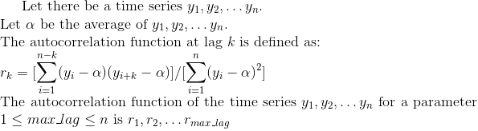
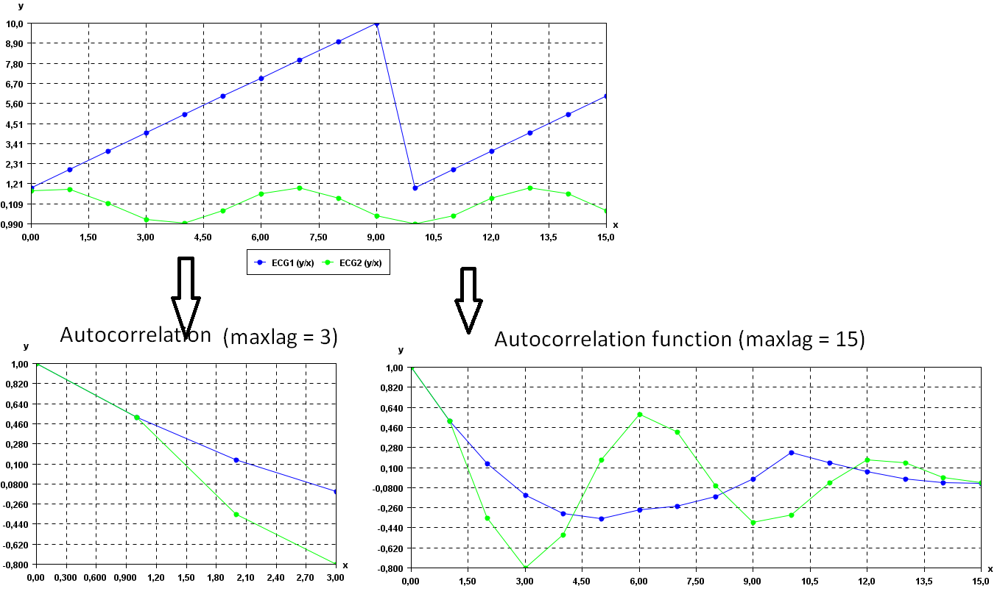

Calculate the autocorrelation function of time series (SPMF documentation)
This example explains how to calculate the autocorrelation function of time series using the SPMF open-source data mining library.
How to run this example?
- If you are using the graphical interface, (1) choose the "Calculate_autocorrelation_of_time_series" algorithm, (2) select the input file "contextAutocorrelation.txt", (3) set the separator to the comma ',' , set (4) maxlag = 15 and then (4) click "Run algorithm".
- If you want to execute this example from the command line,
then execute this command:
java -jar spmf.jar run Calculate_autocorrelation_of_time_series contextAutocorrelation.txt output.txt 15 ,
in a folder containing spmf.jar and the example input file contextAutocorrelation.txt. - If you are using the source code version of SPMF, to run respectively this example, launch the file "MainTestAutocorrelationFileToFile.java"in the package ca.pfv.SPMF.tests.
What is the autocorrelation function of a time series?
Calculating the autocorrelation function of a time series if useful to check if a time series is stationnary, or just generally to check if data points in a time series are correlated or not correlated with some previous data points occuring with a lag. Autocorrelation is defined based on the concept of lag. To generate the correlation function of a time series, we will set a parameter called max_lag, and calculate all values of the autocorrelation function with a lag from 1 to max_lag. The autocorrelation function can be viewed as a time series with values in the [-1,1] interval. A value of 1 for a lag of k indicates a positive correlation with values occuring k values before. Similarly, a value of -1 for a lag of k indicates a negative correlation with the values occuring k values before.
Here is a formal definition of the autocorrelation function:

What is the input of this algorithm?
The input is one or more time series. A time series is a sequence of floating-point decimal numbers (double values). A time-series can also have a name (a string).
Time series are used in many applications. An example of time series is the price of a stock on the stock market over time. Another example is a sequence of temperature readings collected using sensors.
For this example, consider the two following time series:
| Name | Data points |
| ECG1 | 1,2,3,4,5,6,7,8,9,10,1,2,3,4,5,6 |
| ECG2 | 0.84,0.90,0.14,-0.75,-0.95,-0.27,0.65,0.98,0.41,-0.54,-0.99,-0.53,0.42,0.99,0.65,-0.28 |
This example time series database is provided in the file contextAutocorrelation.txt of the SPMF distribution.
In SPMF, to read a time-series file, it is necessary to indicate the "separator", which is the character used to separate data points in the input file. In this example, the "separator" is the comma ',' symbol.
Moreover, the user needs to provide a max_lag value, which is an integer number no less than 1 and no greater than the number of data points in the time series.
What is the output?
The output is a time series representing the autocorrelation function at lag k of the time series taken as input.
For example, in the above example, the autocorrelation functions at lag k of the above tow time series are:
| Name | Data points |
| ECG1_AUTOCOR | 1.0,0.5190217391304348,0.13369565217391305,-0.14728260869565218,-0.31521739130434784,-0.36141304347826086,-0.27717391304347827,-0.24945652173913044,-0.1608695652173913,-0.002717391304347826,0.23369565217391305,0.14402173913043478,0.06304347826086956,-5.434782608695652E-4,-0.03804347826086957,-0.04076086956521739 |
| ECG2_AUTOCOR | 1.0,0.5189630085503281,-0.34896021596534504,-0.8000624914835336,-0.5043545150938301,0.16813498364430499,0.5761216033068776,0.41692503347430215,-0.06371622277688614,-0.38966662981297634,-0.3246273969517782,-0.031970253360281406,0.16771278110458265,0.13993946271399282,0.012475144157765343,-0.036914291507522644 |
To see the result visually, it is possible to use the SPMF time series viewer, described in another example of this documentation. Here is a figure showing the oriignal time series (top) and the autocorrelation functions corresponding to these time series for maxlag = 15 (bottom right) and maxlag = 3 (bottom left) .

As it can be observed all values are now in the [-1,1] interval, as it should.
Besides, in the bottom right figure (max_lag = 15), we can see that the green autocorrelation function has a sinusoidal shape. This is because the original time series is a sinusoidal function. In that case, the autocorrelation function will vary between positive correlations (close to 1) and negative correlations (close to -1) depending on the lag. For example, for a lag of 0, the autocorrelation value is 1, indicating a positive correlation, while for a lag of 3, the autocorrelation value is close to -0.8, which is negative. In general, drawing a chart like the one on the bottom right can be useful to detect if there are some periodic trends in at time series.
Input file format
The input file format is defined
as follows. It is a text file. The text file contains one or more time series. Each time series is represented by two lines. The first line of the file contains optional metadata @FILETYPE="Time series database" indicating that this is a timeseries database file.
The second line contains optional metadata about the source of the file.
The third line
contains the string "@NAME=" followed by the name of the time series. The fourth line is a list of data points, where data points are floating-point decimal numbers separated by a separator character (here the ',' symbol).
Then, the following lines may contain additional time series described in the same way.
For example, for the previous example, the input file is defined as follows:
@FILETYPE="Time series database"
@SOURCE="SPMF SOFTWARE https://philippe-fournier-viger.com/spmf/"
@NAME=ECG1
1,2,3,4,5,6,7,8,9,10,1,2,3,4,5,6
@NAME=ECG2
0.84,0.90,0.14,-0.75,-0.95,-0.27,0.65,0.98,0.41,-0.54,-0.99,-0.53,0.42,0.99,0.65,-0.28
Consider the first two lines. It indicates that the first time series name is "ECG1" and that it consists of the data points: 1,2,3,4,5,6,7,8,9,10,1,2,3,4,5, and 6. Then, the other time series are provided in the same file, which follows the same format.
Output file format
The output file format is the same as the input format. For example, there is the result of this example:
@FILETYPE="Time series database"
@SOURCE="SPMF SOFTWARE https://philippe-fournier-viger.com/spmf/"
@NAME=ECG1_AUTOCOR
1.0,0.5190217391304348,0.13369565217391305,-0.14728260869565218,-0.31521739130434784,-0.36141304347826086,-0.27717391304347827,-0.24945652173913044,-0.1608695652173913,-0.002717391304347826,0.23369565217391305,0.14402173913043478,0.06304347826086956,-5.434782608695652E-4,-0.03804347826086957,-0.04076086956521739
@NAME=ECG2_AUTOCOR
1.0,0.5189630085503281,-0.34896021596534504,-0.8000624914835336,-0.5043545150938301,0.16813498364430499,0.5761216033068776,0.41692503347430215,-0.06371622277688614,-0.38966662981297634,-0.3246273969517782,-0.031970253360281406,0.16771278110458265,0.13993946271399282,0.012475144157765343,-0.036914291507522644
Where can I get more information about the autocorrelation function?
The autcorrelation function is a basic operation for time series. It is described in many websites and books. For example: http://www.real-statistics.com/time-series-analysis/stochastic-processes/autocorrelation-function/